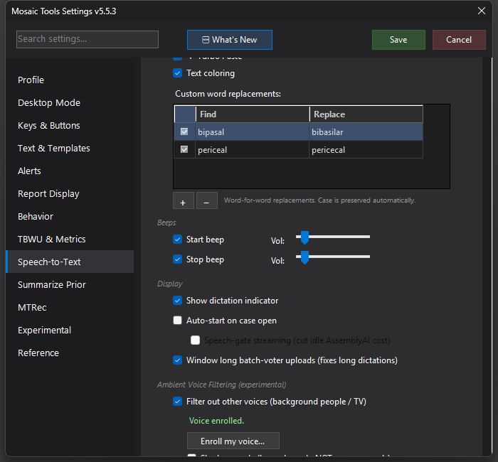

Ambient Voice Filtering (Speaker Gate)
EXPERIMENTAL — a one-time voiceprint of your voice lets the ensemble drop words spoken by other people (background conversation, TV) instead of dictating them into your report.

What it does
If you read in a room with other people or a TV, stray speech can end up in your transcript. The speaker gate builds a one-time voiceprint of your voice and then, during dictation, drops words that clearly weren't spoken by you. It runs alongside the ensemble with no added latency and is deliberately conservative — it only removes speech that is confidently not-you; everything borderline passes through (and the report-processing AI already filters most ambient leakage anyway).
Be aware: this is experimental and not yet generally available. It is currently exercised only on the developer's own workstation and does not ship functional in regular releases. The page exists so you know it's coming and what it will look like.
How to turn it on / set it up
When available: Settings → Speech-to-Text → Ambient Voice Filtering (experimental). Click Enroll my voice… — a dialog shows a short radiology passage to read aloud (~20–30 seconds of normal dictation cadence) and builds the voiceprint. Then check Filter out other voices (background people / TV).
Using it
Start in Shadow mode (log only — do NOT remove words): the gate logs what it would drop but never touches your report. Only after the logs confirm it's catching the right things should the shadow switch come off. A Strictness slider trades aggressiveness against the risk of clipping your own words (default 0.15, the safe end).
Tips & gotchas
- Zero risk while in shadow mode — that's the intended way to trial it.
- Higher strictness removes more background speech but can clip your own quiet asides; move it up slowly.
- Re-enroll if you change microphones dramatically.